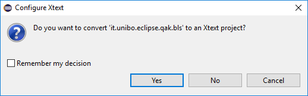

72939 - LAB10 | Using the QActor (meta)model
LabISS-lectures site
Starting
- Download Eclipse Xtext and Install Eclipse plugin for Kotlin.
- Copy in dropins the files that constitute the support to the qak meta-model:
it.unibo.Qactork_1.0.0.jar, it.unibo.Qactork.ui_1.0.0.jar, it.unibo.Qactork.ide_1.0.0.jar.
- In an empty workspace, create a new project of type Kotlin project named it.unibo.eclipse.bls.
- Set the gradle to our Gradle User Home (Windows->Preferences->Gradle)
- In src, create a file with name bls.qak
At this point, Eclipse should present the window:

This means that the installation is correct; after selecting Yes, the workspace looks as
shown in the figure hereunder, on the left:
The red dot on the syntax driven edtor window means that there is an error, since the file cannot be empty.
If you press CTRL-SPACE, the system suggest the key word System that must be followed by
an identifier that will represent the name of our system. Let us write System bls
and then save the file. The workspace changes as shown in the figure above, on the right.
The generated file
bls.pl includes the description of the structure of the
system, as introduced in
Lab6.html#Towards an infrastructure. At the moment the file includes just a comment, since the system model is
empty:
%======================================
% bls description
%======================================
Hello world
As usually happens, our first example will be a qak-system that writes 'hello world'. Thus, let us write some
simple 'code' in the syntax driven editor window and save the file:
|
The Qak-IDE generates:
- A .gitignore and a 'generic' build.gradle file.
To see the .XXX files you must act on the Filters command in the ViewMenu.
- A context-specific gradle file (build_XXX.gradle) for each context.
- One package for each Context and for each QActor. Each package contains some source code written in Kotlin.
Each package related to a Context includes a class whose name starts with Main. This class includes the code that starts the actors
working in that context.
|
-
At the moment, the Qak-IDE is not able to compile the source files since we must set the dependencies written in the 'generic' build.gradle file.
To this end, open a terminal and write the command:
gradle build eclipse
- Now the code should compile. If a ! symbol appears on the project, open Project-> Properties->JavaBuidPath->src and
eliminate the src duplicate.
-
At this point you can run the Main (in our case it.unibo.ctxBls.MainCtxBls.kt) and look at the result.
The ButtonLed System
Our next next step is to define a Qak model for the ButtonLed system discussed in
Lab5.html (From objects to actors).
Under the pressure of 'saving time' we could decide to reuse actors that we already developed and tested.
A first (inappropriate) model
With reference to the actors developed in the project it.unibo.bls19d, we can extend the model as follows:
System bls
Context ctxBls ip [host="localhost" port=8090]
QActor welcome context ctxBls{
State s0 initial{
println("---------------------------------------------------")
println("Welcome to the BLS system described in qak (DSL)")
println("---------------------------------------------------")
}
}
CodedQActor led context ctxBls className "it.unibo.bls19d.qak.LedActork" //FIRST
CodedQActor control context ctxBls className "it.unibo.bls19d.qak.ControlActork"
CodedQActor button context ctxBls className "it.unibo.bls19d.qak.ButtonActork" //LAST
This description says that:
- Our system (bls) is composed of four actors (welcome, led, control, button).
- All the actors work in a same computational node (ctxBls).
- The actor welcome describes its behavior, while the other actors are directly expressed as Kotlin code.
Thus, we have to add in the file build_ctxBls.gradle a dependency to the library that includes such a code (it.unibo.bls19d-1.0.jar).
If we save the model, the
Qak-IDE generates (in file
bls.pl ) the following description of the system:
context(ctxbls, "localhost", "TCP", "8090" ).
qactor( welcome, ctxbls, "it.unibo.welcome.Welcome").
qactor( led, ctxbls, "it.unibo.bls19d.qak.LedActork").
qactor( control, ctxbls, "it.unibo.bls19d.qak.ControlActork").
qactor( button, ctxbls, "it.unibo.bls19d.qak.ButtonActork").
At this point, if we run the generated code
it.unibo.ctxBls.MainCtxBls, the system immediately works.
Is it a good model?
Unfortunately, in the system described by the model above, there are many hidden details. In particular:
- the Kotlin code works by assuming that the led actor is created before
the control that in its turn must be created before the button.
- the model does not show neither the interaction among the main actors nor their logical behavior.
- the transition to a distributed version of the system is not possible, since the Kotlin code
is based on a class (SystemKb) that must be shared among all the actors.
Thus, we can say that:
Thus, let us express our model in a new way, so to explicitly express interaction and behavior related to the actors
led, control and
button.
A better model for the ButtonLed system
bls.qak
From local to distributed
It is quite easy to change the configuration of the system, so to move one or more actors in different nodes.
For example, let us move the
Led in another node:
System bls
Context ctxBls ip [host="localhost" port=8090]
Context ctxLed ip [host="localhost" port=8095]
QActor welcome context ctxBls{ ... }
CodedQActor ctxLed context ctxBls className "it.unibo.bls19d.qak.LedActork" //FIRST
CodedQActor control context ctxBls className "it.unibo.bls19d.qak.ControlActork"
CodedQActor button context ctxBls className "it.unibo.bls19d.qak.ButtonActork" //LAST
In this case, the generated description (in file
bls.pl ) becomes:
context(ctxbls, "localhost", "TCP", "8090" ).
context(ctxled, "localhost", "TCP", "8095" ).
qactor( welcome, ctxbls, "it.unibo.welcome.Welcome").
qactor( led, ctxled, "it.unibo.bls19d.qak.LedActork").
qactor( control, ctxbls, "it.unibo.bls19d.qak.ControlActork").
qactor( button, ctxbls, "it.unibo.bls19d.qak.ButtonActork").